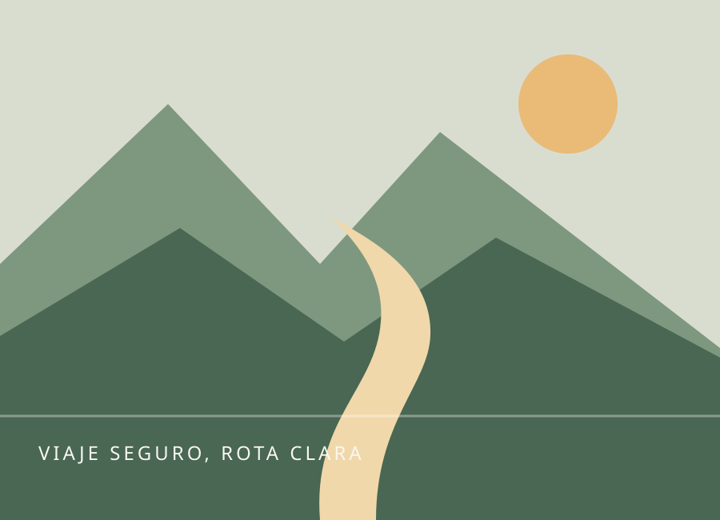

Receber o backup
Escolher uma pasta ou ZIP que o cliente autorizou analisar.
Diagnóstico antes da publicação
Uma página quebrada pode ser caminho, arquivo ou imagem que ficou para trás. Este exemplo mostra como um inspetor em Python lê um site estático sem mexer na cópia original e aponta o que precisa ser conferido antes da migração.

Simulação do resultado
Os cenários abaixo são exemplos criados para esta demonstração. O inspetor Python roda no computador do responsável; esta página apenas ilustra a saída.
O que o inspetor não faz: não altera arquivos, restaura banco de dados, configura DNS, abre painel de hospedagem nem publica o site. A mudança real depende de uma cópia dos arquivos e das informações do novo provedor.
Fluxo do utilitário
Escolher uma pasta ou ZIP que o cliente autorizou analisar.
Conferir entrada, páginas, imagens e arquivos CSS sem extrair o ZIP.
Corrigir uma cópia e testar antes de publicar no provedor definido.
CÓDIGO ABERTO · PYTHON
Sem dependências de terceiros. O comando recebe uma pasta ou ZIP e gera um resumo JSON. Consulte o README para exemplos e limitações.